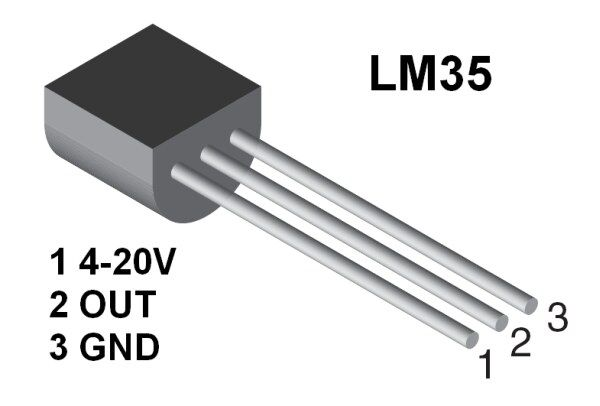
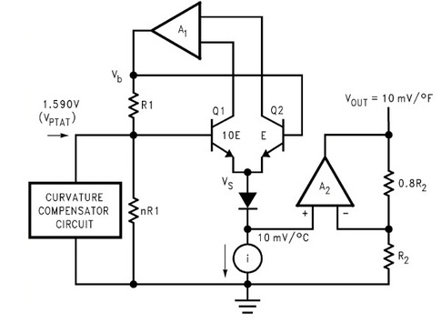
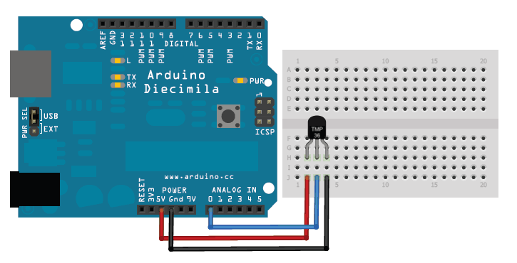

Archived note, written in 2016, while I was at MIT FabLab Kerala. Tools and versions have moved on since.
LM35
Temperature Sensor
LM35 is an analog, linear temperature sensor whose output voltage varies linearly with change in temperature. LM35 is three terminal linear temperature sensor from National semiconductors. It can measure temperature from-55 degree celsius to +150 degree celsius. The voltage output of the LM35 increases 10mV per degree Celsius rise in temperature. LM35 can be operated from a 5V supply and the stand by current is less than 60uA. The pin out of LM35 is shown in the figure below.

Working
LM35 sensor uses the basic principle of a diode ,where as the temperature increases, the voltage across a diode increases at a known rate.By precisely amplifying the voltage change, it is easy to generate an analog signal that is directly proportional to temperature.
Consider the circuit shown below:

There are two transistors in the center of the circuit. One has ten times the emitter area of the other. This means it has one tenth of the current density, since the same current is going through both transistors. This causes a voltage across the resistor R1 that is proportional to the absolute temperature, and is almost linear across the range we care about. The "almost" part is taken care of by a special circuit that straightens out the slightly curved graph of voltage versus temperature.
The amplifier at the top ensures that the voltage at the base of the left transistor (Q1) is proportional to absolute temperature (PTAT) by comparing the output of the two transistors.
The amplifer at the right converts absolute temperature (measured in Kelvin) into either Fahrenheit or Celsius, depending on the part (LM34 or LM35). The little circle with the "i" in it is a constant current source circuit.
The two resistors are calibrated in the factory to produce a highly accurate temperature sensor.
The integrated circuit has many transistors in it - two in the middle, some in each amplifier, some in the constant current source, and some in the curvature compensation circuit. All of that is fit into the tiny package with three leads
Source : https://www.quora.com/How-does-LM35-work?share=1
Interfacing with Arduino
LM35 , being an analog sensor, can easily be interfaced with Arduino using Analog Pin A0 as shown in image.

Image source : http://www.ladyada.net/images/sensors/tmp36fritz.gif
Arduino Code
int sensorPin = 0; //the analog pin the TMP36's Vout (sense) pin is connected to
//the resolution is 10 mV / degree centigrade with a
//500 mV offset to allow for negative temperatures
/*
* setup() - this function runs once when you turn your Arduino on
* We initialize the serial connection with the computer
*/
void setup()
{
Serial.begin(9600); //Start the serial connection with the computer
//to view the result open the serial monitor
}
void loop() // run over and over again
{
//getting the voltage reading from the temperature sensor
int reading = analogRead(sensorPin);
// converting that reading to voltage, for 3.3v arduino use 3.3
float voltage = reading * 5.0 / 1024;
// print out the voltage
Serial.print(voltage); Serial.println(" volts");
// now print out the temperature
float temperatureC = (voltage - 0.5) * 100 ; //converting from 10 mv per degree wit 500 mV offset
//to degrees ((volatge - 500mV) times 100)
Serial.print(temperatureC); Serial.println(" degress C");
// now convert to Fahrenheight
float temperatureF = (temperatureC * 9 / 5) + 32;
Serial.print(temperatureF); Serial.println(" degress F");
delay(1000); //waiting a second
}